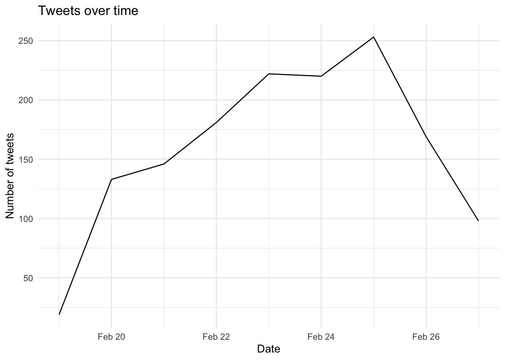
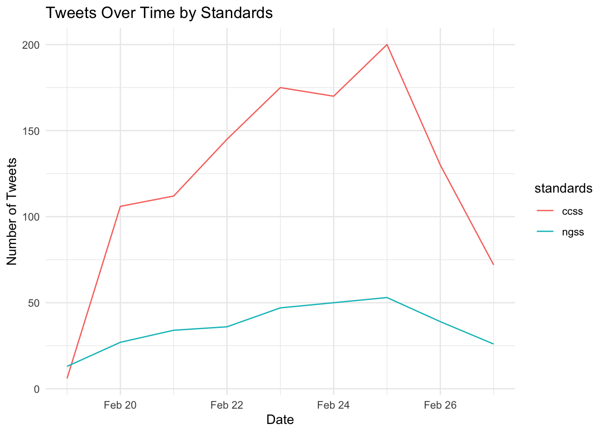
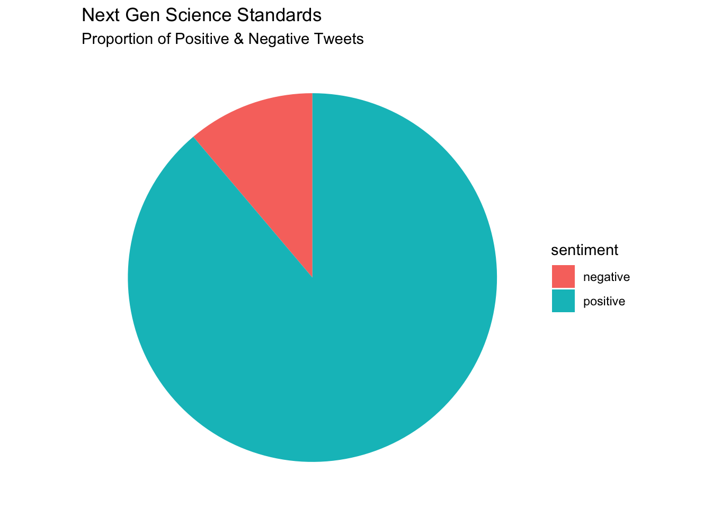
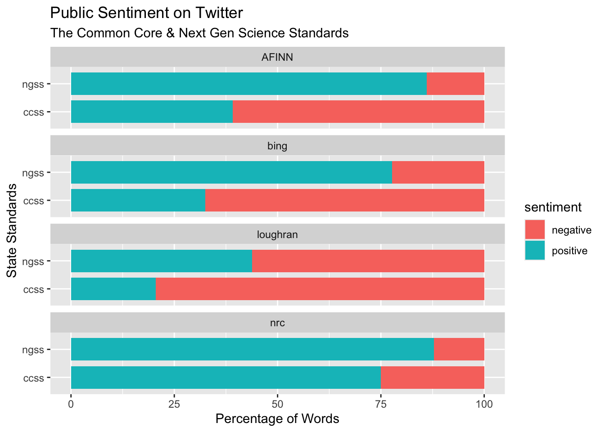

library(dplyr)
library(readr)
library(tidyr)
library(rtweet)
library(writexl)
library(readxl)
library(tidytext)
library(textdata)
library(ggplot2)
library(textdata)
library(scales)Lab 2: Dictionary Methods - Twitter Sentiment and School Reform
0. INTRODUCTION
In this lab, our case study walkthrough is guided by my colleague Josh Rosenberg’s article, Advancing new methods for understanding public sentiment about educational reforms: The case of Twitter and the Next Generation Science Standards. We will focus on conducting a very simplistic “replication study” by comparing the sentiment of tweets about the Next Generation Science Standards (NGSS) and Common Core State Standards (CCSS) in order to better understand public reaction to these two curriculum reform efforts. I highly recommend you watch the quick 3-minute overview of this work at https://stanford.app.box.com/s/i5ixkj2b8dyy8q5j9o5ww4nafznb497x
Walkthrough Focus
For Lab 2, our focus will be on analyzing data from NGSS and CSSS posts and using sentiment lexicons to help gauge public opinion about those posts. Silge & Robinson nicely illustrate the tools of text mining to approach the emotional content of text programmatically, in the following diagram:

Our Lab 2 walkthrough will cover the following topics:
- Prepare: Prior to analysis, it’s critical to understand the context and data sources you’re working with so you can formulate useful and answerable questions. We’ll take a quick look at Dr. Rosenberg’s study as well as our datasets of interest .
- Wrangle: In section 2 we revisit tidying and tokenizing text from Lab 1, and learn some new functions for appending sentiment scores to our tweets using the AFFIN, bing, and nrc sentiment lexicons.
- Explore: In section 3, we use simple summary statistics and basic data visualization to compare sentiment between NGSS and CCSS tweets.
- Model: While we won’t leverage modeling approaches until Lab 3, we will examine the mixed effects model used by Rosenberg et al. to analyze the sentiment of tweets.
- Communicate: Finally, we’ll create a basic presentation, report, or other data product for sharing findings and insights from our analysis.
1. PREPARE
To help us better understand the context, questions, and data sources that we will be using in Lab 2, this section will focus on the following topics:
- Context. We take a quick look at the Rosenberg et al. (2021) article, Advancing new methods for understanding public sentiment about educational reforms, including the purpose of the study, questions explored, and findings.
- Questions. We’ll formulate some basic questions that we’ll use to guide our analysis, attempting to replicate some of the findings by Rosenberg et al.
- Set up We will set up a “home’ environment for the files and codes for lab 2.
1a. Some Context
Twitter (Now known as X) and the Next Generation Science Standards

Abstract
While the Next Generation Science Standards (NGSS) are a long-standing and widespread standards-based educational reform effort, they have received less public attention, and no studies have explored the sentiment of the views of multiple stakeholders toward them. To establish how public sentiment about this reform might be similar to or different from past efforts, we applied a suite of data science techniques to posts about the standards on Twitter from 2010-2020 (N = 571,378) from 87,719 users. Applying data science techniques to identify teachers and to estimate tweet sentiment, we found that the public sentiment towards the NGSS is overwhelmingly positive—33 times more so than for the CCSS. Mixed effects models indicated that sentiment became more positive over time and that teachers, in particular, showed a more positive sentiment towards the NGSS. We discuss implications for educational reform efforts and the use of data science methods for understanding their implementation.
Data Source & Analysis
Similar to what we’ll be learning in this walkthrough, Rosenberg et al. used publicly accessible data from Twitter collected using the Full-Archive Twitter API and the rtweet package in R. Specifically, the authors accessed tweets and user information from the hashtag-based #NGSSchat online community, all tweets that included any of the following phrases, with “/” indicating an additional phrase featuring the respective plural form: “ngss”, “next generation science standard/s”, “next gen science standard/s”.
Unlike this walkthrough, however, the authors determined Tweet sentiment using the Java version of SentiStrength to assign tweets to two 5-point scales of sentiment, one for positivity and one for negativity, because SentiStrength is a validated measure for sentiment in short informal texts (Thelwall et al., 2011). In addition, we used this tool because Wang and Fikis (2019) used it to explore the sentiment of CCSS-related posts. We’ll be using the AFINN sentiment lexicon which also assigns words in a tweet to two 5-point scales, in addition to explore some other sentiment lexicons.
Note that the authors also used the lme4 package in R to run a mixed effects model to determine if sentiment changes over time and differs between teachers and non-teacher. We will not attempt replicated that aspect of the analysis, but if you are interested in a guided walkthrough of how modeling can be used to understand changes in Twitter word use, see Chapter 7 of Text Mining with R.
Summary of Key Findings
- Contrasting with sentiment about CSSS, sentiment about the NGSS science education reform effort is overwhelmingly positive, with approximately 9 positive tweets for every negative tweet.
- Teachers were more positive than non-teachers, and sentiment became substantially more positive over the ten years of NGSS-related posts.
- Differences between the context of the tweets were small, but those that did not include the #NGSSchat hashtag became more positive over time than those posts that did not include the hashtag.
- Individuals posted more tweets during #NGSSchat chats, the sentiment of their posts was more positive, suggesting that while the context of individual tweets has a small effect (with posts not including the hashtag becoming more positive over time), the effect upon individuals of being involved in the #NGSSchat was positive.
1b. Guiding Questions
The Rosenberg et al. study was guided by the following five research questions:
- What is the public sentiment expressed toward the NGSS?
- How does sentiment for teachers differ from non-teachers?
- How do tweets posted to #NGSSchat differ from those without the hashtag?
- How does participation in #NGSSchat relate to the public sentiment individuals express?
- How does public sentiment vary over time?
For this walkthrough, we’ll use a similar approach used by the authors to gauge public sentiment around the NGSS, by compare how much more positive or negative NGSS tweets are relative to CSSS tweets.
Our (very) specific questions of interest for this walkthrough are:
- What is the public sentiment expressed toward the NGSS?
- How does sentiment for NGSS compare to sentiment for CCSS?
And just to reiterate from Lab 1, one overarching question we’ll explore throughout this lab, and that Silge and Robinson (2018) identify as a central question to text mining and natural language processing, is:
How do we to quantify what a document or collection of documents is about?
1c. Set Up
As highlighted in Chapter 6 of Data Science in Education Using R (DSIEUR), one of the first steps of every workflow should be to set up a “Project” within RStudio. This will be your “home” for any files and code used or created in Lab 2. You are welcome to continue using the same project created for Lab 1, or create an entirely new project for Lab 2. However, after you’ve created your project open up a new R script, and load the following packages that we’ll be needing for this walkthrough:
I highly recommend that that you manually type the code shared throughout this walkthrough, for large blocks of text it may be easier to copy and paste.
2. WRANGLE
In general, data wrangling involves some combination of cleaning, reshaping, transforming, and merging data (Wickham & Grolemund, 2017). The importance of data wrangling is difficult to overstate, as it involves the initial steps of going from raw data to a dataset that can be explored and modeled (Krumm et al, 2018).
- Import Data. In this section, we will import and read data from excel to R environment.
- Tidy Tweets. We revisit the
tidytextpackage to both “tidy” and tokenize our tweets in order to create our data frame for analysis. - Get Sentiments. We conclude our data wrangling by introducing sentiment lexicons and the
inner_join()function for appending sentiment values to our data frame.
2a. Import Data
We’ll use the readxl package highlighted in Lab 1 and the read_xlsx() function to read in the data stored in the data folder of our R project:
ngss_tweets <- read_xlsx("data/ngss_tweets.xlsx")
ccss_tweets <- read_xlsx("data/csss_tweets.xlsx")2b. Tidy Text
Now that we have the data needed to answer our questions, we still have a little bit of work to do to get it ready for analysis. This section will revisit some familiar functions from Lab 1 and introduce a couple new functions:
Functions Used
dplyr functions
select()picks variables based on their names.slice()lets you select, remove, and duplicate rows.rename()changes the names of individual variables using new_name = old_name syntaxfilter()picks cases, or rows, based on their values in a specified column.
tidytext functions
unnest_tokens()splits a column into tokensanti_join()returns all rows from x without a match in y.
Subset Rows & Columns
As you are probably already aware, we have way more data than we’ll need for analysis and will need to pare it down quite a bit.
First, let’s use the filter function to subset rows containing only tweets in the language:
ngss_text <- filter(ngss_tweets, lang == "en")Now let’s select the following columns from our new ngss_text data frame:
screen_nameof the user who created the tweetcreated_attimestamp for examining changes in sentiment over timetextcontaining the tweet which is our primary data source of interest
ngss_text <- select(ngss_text,screen_name, created_at, text)Add & Reorder Columns
Since we are interested in comparing the sentiment of NGSS tweets with CSSS tweets, it would be helpful if we had a column for quickly identifying the set of state standards, with which each tweet is associated.
We’ll use the mutate() function to create a new variable called standards to label each tweets as “ngss”:
ngss_text <- mutate(ngss_text, standards = "ngss")And just because it bothers me, I’m going to use the relocate() function to move the standards column to the first position so I can quickly see which standards the tweet is from:
ngss_text <- relocate(ngss_text, standards)Note that you could also have used the select() function to reorder columns like so:
ngss_text <- select(ngss_text, standards, screen_name, created_at, text)Finally, let’s rewrite the code above using the %>% operator so there is less redundancy and it is easier to read:
ngss_text <-
ngss_tweets %>%
filter(lang == "en") %>%
select(screen_name, created_at, text) %>%
mutate(standards = "ngss") %>%
relocate(standards)✅ Comprehension Check
WARNING: You will not be able to progress to the next section until you have completed the following task:
- Create a new
ccss_textdata frame for ourccss_tweetsCommon Core tweets by modifying code above.
Combine Data Frames
Finally, let’s combine our ccss_text and ngss_text into a single data frame by using the bind_rows() function from dplyr to simply supplying the data frames that you want to combine as arguments:
tweets <- bind_rows(ngss_text, ccss_text)And let’s take a quick look at both the head() and the tail() of this new tweets data frame to make sure it contains both “ngss” and “ccss” standards:
head(tweets)# A tibble: 6 × 4
standards screen_name created_at text
<chr> <chr> <dttm> <chr>
1 ngss loyr2662 2021-02-27 17:33:27 "Switching gears for a bit for the…
2 ngss loyr2662 2021-02-20 20:02:37 "Was just introduced to the Engine…
3 ngss Furlow_teach 2021-02-27 17:03:23 "@IBchemmilam @chemmastercorey I’m…
4 ngss Furlow_teach 2021-02-27 14:41:01 "@IBchemmilam @chemmastercorey How…
5 ngss TdiShelton 2021-02-27 14:17:34 "I am so honored and appreciative …
6 ngss TdiShelton 2021-02-27 15:49:17 "Thank you @brian_womack I loved c…tail(tweets)# A tibble: 6 × 4
standards screen_name created_at text
<chr> <chr> <dttm> <chr>
1 ccss JosiePaul8807 2021-02-20 00:34:53 "@SenatorHick You realize science…
2 ccss ctwittnc 2021-02-19 23:44:18 "@winningatmylife I’ll bet none o…
3 ccss the_rbeagle 2021-02-19 23:27:06 "@dmarush @electronlove @Montgome…
4 ccss silea 2021-02-19 23:11:21 "@LizerReal I don’t think that’s …
5 ccss JodyCoyote12 2021-02-19 22:58:25 "@CarlaRK3 @NedLamont Fully fund …
6 ccss Ryan_Hawes 2021-02-19 22:41:01 "I just got an \"explainer\" on h…Tokenize Text
We have a couple remaining steps to tidy our text that hopefully should feel familiar by this point. If you recall from Chapter 1 of Text Mining With R, Silge & Robinson describe tokens as:
A meaningful unit of text, such as a word, that we are interested in using for analysis, and tokenization is the process of splitting text into tokens. This one-token-per-row structure is in contrast to the ways text is often stored in current analyses, perhaps as strings or in a document-term matrix.
First, let’s tokenize our tweets by using the unnest_tokens() function to split each tweet into a single row to make it easier to analyze:
tweet_tokens <-
tweets %>%
unnest_tokens(output = word,
input = text)Notice that we’ve included an additional argument in the call to unnest_tokens(). Specifically, we used the specialized “tweets” tokenizer in the tokens = argument that is very useful for dealing with Twitter text or other text from online forums in that it retains hashtags and mentions of usernames with the @ symbol.
Remove Stop Words
Now let’s remove stop words like “the” and “a” that don’t help us learn much about what people are tweeting about the state standards.
tidy_tweets <-
tweet_tokens %>%
anti_join(stop_words, by = "word")Notice that we’ve specified the by = argument to look for matching words in the word column for both data sets and remove any rows from the tweet_tokens dataset that match the stop_words dataset. Remember when we first tokenized our dataset I conveniently chose output = word as the column name because it matches the column name word in the stop_words dataset contained in the tidytext package. This makes our call to anti_join()simpler because anti_join() knows to look for the column named word in each dataset. However this wasn’t really necessary since word is the only matching column name in both datasets and it would have matched those columns by default.
Custom Stop Words
Before wrapping up, let’s take a quick count of the most common words in tidy_tweets data frame:
count(tidy_tweets, word, sort = T)# A tibble: 7,163 × 2
word n
<chr> <int>
1 common 1112
2 core 1109
3 https 623
4 t.co 623
5 math 450
6 ngss 224
7 students 141
8 science 140
9 school 128
10 amp 127
# ℹ 7,153 more rowsNotice that the nonsense word “amp” is in our top tens words. If we use the filter() function and `grep() query from Lab 1 on our tweets data frame, we can see that “amp” seems to be some sort of html residue that we might want to get rid of.
filter(tweets, grepl('amp', text))# A tibble: 124 × 4
standards screen_name created_at text
<chr> <chr> <dttm> <chr>
1 ngss TdiShelton 2021-02-27 14:17:34 "I am so honored and appreciati…
2 ngss STEMTeachTools 2021-02-27 16:25:04 "Open, non-hierarchical communi…
3 ngss NGSSphenomena 2021-02-25 13:24:22 "Bacteria have music preference…
4 ngss CTSKeeley 2021-02-21 21:50:04 "Today I was thinking about the…
5 ngss richbacolor 2021-02-24 14:14:49 "Last chance to register for @M…
6 ngss MrsEatonELL 2021-02-27 06:24:09 "Were we doing the hand jive? N…
7 ngss STEMuClaytion 2021-02-24 14:56:19 "#WonderWednesday w/ questions …
8 ngss LearningUNDFTD 2021-02-24 18:13:01 "Are candies like M&Ms and …
9 ngss abeslo 2021-02-26 18:54:31 "#M'Kenna, whose story we share…
10 ngss E3Chemistry 2021-02-25 14:15:20 "Molarity & Parts Per Milli…
# ℹ 114 more rowsLet’s rewrite our stop word code to add a custom stop word to filter out rows with “amp” in them:
tidy_tweets <-
tweet_tokens %>%
anti_join(stop_words, by = "word") %>%
filter(!word == "amp")Note that we could extend this filter to weed out any additional words that don’t carry much meaning but skew our data by being so prominent.
✅ Comprehension Check
We’ve created some unnecessarily lengthy code to demonstrate some of the steps in the tidying process. Rewrite the tokenization and removal of stop words processes into a more compact series of commands and save your data frame as tidy_tweets.
2c. Add Sentiment Values
Now that we have our tweets nice and tidy, we’re almost ready to begin exploring public sentiment around the CCSS and NGSS standards. For this part of our workflow we introduce two new functions from the tidytext and dplyr packages respectively:
get_sentiments()returns specific sentiment lexicons with the associated measures for each word in the lexiconinner_join()return all rows fromxwhere there are matching values iny, and all columns fromxandy.
For a quick overview of the different join functions with helpful visuals, visit: https://statisticsglobe.com/r-dplyr-join-inner-left-right-full-semi-anti
Get Sentiments
Recall from our readings that sentiment analysis tries to evaluate words for their emotional association. Silge & Robinson point out that, “one way to analyze the sentiment of a text is to consider the text as a combination of its individual words and the sentiment content of the whole text as the sum of the sentiment content of the individual words.” As our readings illustrated, this isn’t the only way to approach sentiment analysis, but it is an easier entry point into sentiment analysis and often-used.
The tidytext package provides access to several sentiment lexicons based on unigrams, i.e., single words. These lexicons contain many English words and the words are assigned scores for positive/negative sentiment, and also possibly emotions like joy, anger, sadness, and so forth.
The three general-purpose lexicons we’ll focus on are:
AFINNassigns words with a score that runs between -5 and 5, with negative scores indicating negative sentiment and positive scores indicating positive sentiment.bingcategorizes words in a binary fashion into positive and negative categories.nrccategorizes words in a binary fashion (“yes”/“no”) into categories of positive, negative, anger, anticipation, disgust, fear, joy, sadness, surprise, and trust.
Note that if this is your first time using the AFINN and NRC lexicons, you’ll be prompted to download both Respond yes to the prompt by entering “1” and the NRC and AFINN lexicons will download. You’ll only have to do this the first time you use the NRC lexicon.
Let’s take a quick look at each of these lexicons using the get_sentiments() function and assign them to their respective names for later use:
afinn <- get_sentiments("afinn")
afinn# A tibble: 2,477 × 2
word value
<chr> <dbl>
1 abandon -2
2 abandoned -2
3 abandons -2
4 abducted -2
5 abduction -2
6 abductions -2
7 abhor -3
8 abhorred -3
9 abhorrent -3
10 abhors -3
# ℹ 2,467 more rowsbing <- get_sentiments("bing")
bing# A tibble: 6,786 × 2
word sentiment
<chr> <chr>
1 2-faces negative
2 abnormal negative
3 abolish negative
4 abominable negative
5 abominably negative
6 abominate negative
7 abomination negative
8 abort negative
9 aborted negative
10 aborts negative
# ℹ 6,776 more rowsnrc <- get_sentiments("nrc")
nrc# A tibble: 13,872 × 2
word sentiment
<chr> <chr>
1 abacus trust
2 abandon fear
3 abandon negative
4 abandon sadness
5 abandoned anger
6 abandoned fear
7 abandoned negative
8 abandoned sadness
9 abandonment anger
10 abandonment fear
# ℹ 13,862 more rowsAnd just out of curiosity, let’s take a look at the loughran lexicon as well:
loughran <- get_sentiments("loughran")
loughran# A tibble: 4,150 × 2
word sentiment
<chr> <chr>
1 abandon negative
2 abandoned negative
3 abandoning negative
4 abandonment negative
5 abandonments negative
6 abandons negative
7 abdicated negative
8 abdicates negative
9 abdicating negative
10 abdication negative
# ℹ 4,140 more rows✅ Comprehension Check
- How were these sentiment lexicons put together and validated? Hint: take a look at Chapter 2 from Text Mining with R.
- Why should we be cautious when using and interpreting them?
Join Sentiments
We’ve reached the final step in our data wrangling process before we can begin exploring our data to address our questions.
In the previous section, we used anti_join() to remove stop words in our dataset. For sentiment analysis, we’re going use the inner_join() function to do something similar. However, instead of removing rows that contain words matching those in our stop words dictionary, inner_join() allows us to keep only the rows with words that match words in our sentiment lexicons, or dictionaries, along with the sentiment measure for that word from the sentiment lexicon.
Let’s use inner_join() to combine our two tidy_tweets and afinn data frames, keeping only rows with matching data in the word column:
sentiment_afinn <- inner_join(tidy_tweets, afinn, by = "word")
sentiment_afinn# A tibble: 1,540 × 5
standards screen_name created_at word value
<chr> <chr> <dttm> <chr> <dbl>
1 ngss loyr2662 2021-02-27 17:33:27 win 4
2 ngss Furlow_teach 2021-02-27 17:03:23 love 3
3 ngss Furlow_teach 2021-02-27 17:03:23 sweet 2
4 ngss Furlow_teach 2021-02-27 17:03:23 significance 1
5 ngss TdiShelton 2021-02-27 14:17:34 honored 2
6 ngss TdiShelton 2021-02-27 14:17:34 opportunity 2
7 ngss TdiShelton 2021-02-27 14:17:34 wonderful 4
8 ngss TdiShelton 2021-02-27 14:17:34 powerful 2
9 ngss TdiShelton 2021-02-27 15:49:17 loved 3
10 ngss TdiShelton 2021-02-27 16:51:32 share 1
# ℹ 1,530 more rowsNotice that each word in your sentiment_afinn data frame now contains a value ranging from -5 (very negative) to 5 (very positive).
sentiment_bing <- inner_join(tidy_tweets, bing, by = "word")
sentiment_bing# A tibble: 1,668 × 5
standards screen_name created_at word sentiment
<chr> <chr> <dttm> <chr> <chr>
1 ngss loyr2662 2021-02-27 17:33:27 win positive
2 ngss Furlow_teach 2021-02-27 17:03:23 love positive
3 ngss Furlow_teach 2021-02-27 17:03:23 helped positive
4 ngss Furlow_teach 2021-02-27 17:03:23 sweet positive
5 ngss Furlow_teach 2021-02-27 17:03:23 tough positive
6 ngss TdiShelton 2021-02-27 14:17:34 honored positive
7 ngss TdiShelton 2021-02-27 14:17:34 appreciative positive
8 ngss TdiShelton 2021-02-27 14:17:34 wonderful positive
9 ngss TdiShelton 2021-02-27 14:17:34 powerful positive
10 ngss TdiShelton 2021-02-27 15:49:17 loved positive
# ℹ 1,658 more rowsWarning in inner_join(tidy_tweets, nrc, by = "word"): Detected an unexpected many-to-many relationship between `x` and `y`.
ℹ Row 26 of `x` matches multiple rows in `y`.
ℹ Row 7509 of `y` matches multiple rows in `x`.
ℹ If a many-to-many relationship is expected, set `relationship =
"many-to-many"` to silence this warning.Warning in inner_join(tidy_tweets, loughran, by = "word"): Detected an unexpected many-to-many relationship between `x` and `y`.
ℹ Row 2417 of `x` matches multiple rows in `y`.
ℹ Row 2589 of `y` matches multiple rows in `x`.
ℹ If a many-to-many relationship is expected, set `relationship =
"many-to-many"` to silence this warning.✅ Comprehension Check
- Create a
sentiment_nrcdata frame using the code above. - What do you notice about the change in the number of observations (i.e. words) between the
tidy_tweetsand data frames with sentiment values attached? Why did this happen?
Note: To complete to the following section, you’ll need the sentiment_nrc data frame.
3. EXPLORE
Now that we have our tweets tidied and sentiments joined, we’re ready for a little data exploration. As highlighted in Lab 1, calculating summary statistics, data visualization, and feature engineering (the process of creating new variables from a dataset) are a key part of exploratory data analysis. One goal in this phase is explore questions that drove the original analysis and develop new questions and hypotheses to test in later stages. Topics addressed in Section 3 include:
- Time Series. We take a quick look at the date range of our tweets and compare number of postings by standards.
- Sentiment Summaries. We put together some basic summaries of our sentiment values in order to compare public sentiment
3a. Time Series
Before we dig into sentiment, let’s use the handy ts_plot function built into rtweet to take a very quick look at how far back our tidied tweets data set goes:
#ts_plot(tweets, by = "days")
# Aggregate tweets by date
tweet_counts <- tweets %>%
dplyr::mutate(date = as.Date(created_at)) %>%
dplyr::count(date)
# Plot using ggplot2
ggplot(tweet_counts, aes(x = date, y = n)) +
geom_line() +
labs(title = "Tweets over time",
x = "Date",
y = "Number of tweets") +
theme_minimal()
Notice that this effectively creates a ggplot time series plot for us. I’ve included the by = argument which by default is set to “days”. Try changing it to “hours” and see what happens.
✅ Comprehension Check
- Use
ts_plotwith thegroup_byfunction to compare the number of tweets over time by Next Gen and Common Corestandards - Which set of standards is Twitter users talking about the most?
Hint: use the ?ts_plot help function to check the examples to see how this can be done.
Your line graph should look something like this:

3b. Sentiment Summaries
Since our primary goals is to compare public sentiment around the NGSS and CCSS state standards, in this section we put together some basic numerical summaries using our different lexicons to see whether tweets are generally more positive or negative for each standard as well as differences between the two. To do this, we revisit the following dplyr functions:
count()lets you quickly count the unique values of one or more variablesgroup_by()takes a data frame and one or more variables to group bysummarise()creates a numerical summary of data using arguments likemean()andmedian()mutate()adds new variables and preserves existing ones
And introduce one new function:
spread()
Sentiment Counts
Let’s start with bing, our simplest sentiment lexicon, and use the count function to count how many times in our sentiment_bing data frame “positive” and “negative” occur in sentiment column and :
summary_bing <- count(sentiment_bing, sentiment, sort = TRUE)Collectively, it looks like our combined dataset has more positive words than negative words.
summary_bing# A tibble: 2 × 2
sentiment n
<chr> <int>
1 negative 992
2 positive 676Since our main goal is to compare positive and negative sentiment between CCSS and NGSS, let’s use the group_by function again to get sentiment summaries for NGSS and CCSS separately:
summary_bing <- sentiment_bing %>%
group_by(standards) %>%
count(sentiment)
summary_bing# A tibble: 4 × 3
# Groups: standards [2]
standards sentiment n
<chr> <chr> <int>
1 ccss negative 926
2 ccss positive 446
3 ngss negative 66
4 ngss positive 230Looks like CCSS have far more negative words than positive, while NGSS skews much more positive. So far, pretty consistent with Rosenberg et al. findings!!!
Compute Sentiment Value
Our last step will be calculate a single sentiment “score” for our tweets that we can use for quick comparison and create a new variable indicating which lexicon we used.
First, let’s untidy our data a little by using the spread function from the tidyr package to transform our sentiment column into separate columns for negative and positive that contains the n counts for each:
summary_bing <- sentiment_bing %>%
group_by(standards) %>%
count(sentiment, sort = TRUE) %>%
spread(sentiment, n)
summary_bing# A tibble: 2 × 3
# Groups: standards [2]
standards negative positive
<chr> <int> <int>
1 ccss 926 446
2 ngss 66 230Finally, we’ll use the mutate function to create two new variables: sentiment and lexicon so we have a single sentiment score and the lexicon from which it was derived:
summary_bing <- sentiment_bing %>%
group_by(standards) %>%
count(sentiment, sort = TRUE) %>%
spread(sentiment, n) %>%
mutate(sentiment = positive - negative) %>%
mutate(lexicon = "bing") %>%
relocate(lexicon)
summary_bing# A tibble: 2 × 5
# Groups: standards [2]
lexicon standards negative positive sentiment
<chr> <chr> <int> <int> <int>
1 bing ccss 926 446 -480
2 bing ngss 66 230 164There we go, now we can see that CCSS scores negative, while NGSS is overall positive.
Let’s calculate a quick score for using the afinn lexicon now. Remember that AFINN provides a value from -5 to 5 for each:
head(sentiment_afinn)# A tibble: 6 × 5
standards screen_name created_at word value
<chr> <chr> <dttm> <chr> <dbl>
1 ngss loyr2662 2021-02-27 17:33:27 win 4
2 ngss Furlow_teach 2021-02-27 17:03:23 love 3
3 ngss Furlow_teach 2021-02-27 17:03:23 sweet 2
4 ngss Furlow_teach 2021-02-27 17:03:23 significance 1
5 ngss TdiShelton 2021-02-27 14:17:34 honored 2
6 ngss TdiShelton 2021-02-27 14:17:34 opportunity 2To calculate late a summary score, we will need to first group our data by standards again and then use the summarise function to create a new sentiment variable by adding all the positive and negative scores in the value column:
summary_afinn <- sentiment_afinn %>%
group_by(standards) %>%
summarise(sentiment = sum(value)) %>%
mutate(lexicon = "AFINN") %>%
relocate(lexicon)
summary_afinn# A tibble: 2 × 3
lexicon standards sentiment
<chr> <chr> <dbl>
1 AFINN ccss -808
2 AFINN ngss 503Again, CCSS is overall negative while NGSS is overall positive!
✅ Comprehension Check
For your final task for this walkthough, calculate a single sentiment score for NGSS and CCSS using the remaining nrc and loughan lexicons and answer the following questions. Are these findings above still consistent?
Hint: The nrc lexicon contains “positive” and “negative” values just like bing and loughan, but also includes values like “trust” and “sadness” as shown below. You will need to use the filter() function to select rows that only contain “positive” and “negative.”
nrc# A tibble: 13,872 × 2
word sentiment
<chr> <chr>
1 abacus trust
2 abandon fear
3 abandon negative
4 abandon sadness
5 abandoned anger
6 abandoned fear
7 abandoned negative
8 abandoned sadness
9 abandonment anger
10 abandonment fear
# ℹ 13,862 more rows# A tibble: 2 × 5
# Groups: standards [2]
standards method negative positive sentiment
<chr> <chr> <int> <int> <dbl>
1 ccss nrc 766 2294 2.99
2 ngss nrc 79 571 7.23# A tibble: 2 × 3
lexicon standards sentiment
<chr> <chr> <dbl>
1 AFINN ccss -808
2 AFINN ngss 5034. MODEL
As highlighted in Chapter 3 of Data Science in Education Using R, the Model step of the data science process entails “using statistical models, from simple to complex, to understand trends and patterns in the data.” The authors note that while descriptive statistics and data visualization during the Explore step can help us to identify patterns and relationships in our data, statistical models can be used to help us determine if relationships, patterns and trends are actually meaningful.
Recall from the PREPARE section, that the Rosenberg et al. study was guided by the following questions:
- What is the public sentiment expressed toward the NGSS?
- How does sentiment for teachers differ from non-teachers?
- How do tweets posted to #NGSSchat differ from those without the hashtag?
- How does participation in #NGSSchat relate to the public sentiment individuals express?
- How does public sentiment vary over time?
Similar to our sentiment summary using the AFINN lexicon, the Rosenberg et al. study used the -5 to 5 sentiment score from the SentiStrength lexicon to answer RQ #1. To address the remaining questions the authors used a mixed effects model (also known as multi-level or hierarchical linear models via the lme4 package in R.
Collectively, the authors found that:
- The SentiStrength scale indicated an overall neutral sentiment for tweets about the Next Generation Science Standards.
- Teachers were more positive in their posts than other participants.
- Posts including #NGSSchat that were posted outside of chats were slightly more positive relative to those that did not include the #NGSSchat hashtag.
- The effect upon individuals of being involved in the #NGSSchat was positive, suggesting that there is an impact on individuals—not tweets—of participating in a community focused on the NGSS.
- Posts about the NGSS became substantially more positive over time.
5. COMMUNICATE
The final(ish) step in our workflow/process is sharing the results of analysis with wider audience. Krumm et al. (2018) outlined the following 3-step process for communicating with education stakeholders what you have learned through analysis:
- Select. Communicating what one has learned involves selecting among those analyses that are most important and most useful to an intended audience, as well as selecting a form for displaying that information, such as a graph or table in static or interactive form, i.e. a “data product.”
- Polish. After creating initial versions of data products, research teams often spend time refining or polishing them, by adding or editing titles, labels, and notations and by working with colors and shapes to highlight key points.
- Narrate. Writing a narrative to accompany the data products involves, at a minimum, pairing a data product with its related research question, describing how best to interpret the data product, and explaining the ways in which the data product helps answer the research question.
5a. Select
Remember that the questions of interest that we want to focus on for our selection, polishing, and narration include:
- What is the public sentiment expressed toward the NGSS?
- How does sentiment for NGSS compare to sentiment for CCSS?
To address questions 1 and 2, I’m going to focus my analyses, data products and sharing format on the following:
- Analyses. For RQ1, I want to try and replicate as closely as possible the analysis by Rosenberg et al., so I will clean up my analysis and calculate a single sentiment score using the AFINN Lexicon for the entire tweet and label it positive or negative based on that score. I also want to highlight how regardless of the lexicon selected, NGSS tweets contain more positive words than negative, so I’ll also polish my previous analyses and calculate percentages of positive and negative words for the tweets.
- Data Products. I know these are shunned in the world of data viz, but I think a pie chart will actually be an effective way to quickly communicate the proportion of positive and negative tweets among the Next Generation Science Standards. And for my analyses with the
bing,nrc, andloughanlexicons, I’ll create some 100% stacked bars showing the percentage of positive and negative words among all tweets for the NGSS and CCSS. - Format. Similar to Lab 1, I’ll be using R Markdown again to create a quick slide deck. Recall that R Markdown files can also be used to create a wide range of outputs and formats, including polished PDF or Word documents, websites, web apps, journal articles, online books, interactive tutorials and more. And to make this process even more user-friendly, R Studio now includes a visual editor!
5b. Polish
NGSS Sentiment
I want to replicate as closely as possible the approach that Rosenberg et al. used in their analysis. To do that, I’ll recycle some R code I used in section 2b. Tidy Text.
To polish my analyses and prepare, first I need to rebuild the tweets dataset from my ngss_tweets and ccss_tweets and select both the status_id that is unique to each tweet, and the text column which contains the actual post:
ngss_text <-
ngss_tweets %>%
filter(lang == "en") %>%
select(status_id, text) %>%
mutate(standards = "ngss") %>%
relocate(standards)
ccss_text <-
ccss_tweets %>%
filter(lang == "en") %>%
select(status_id, text) %>%
mutate(standards = "ccss") %>%
relocate(standards)
tweets <- bind_rows(ngss_text, ccss_text)
tweets# A tibble: 1,441 × 3
standards status_id text
<chr> <chr> <chr>
1 ngss 1365716690336645124 "Switching gears for a bit for the \"Crosscutt…
2 ngss 1363217513761415171 "Was just introduced to the Engineering Habits…
3 ngss 1365709122763653133 "@IBchemmilam @chemmastercorey I’m familiar w/…
4 ngss 1365673294360420353 "@IBchemmilam @chemmastercorey How well does t…
5 ngss 1365667393188601857 "I am so honored and appreciative to have an o…
6 ngss 1365690477266284545 "Thank you @brian_womack I loved connecting wi…
7 ngss 1365706140496130050 "Please share #NGSSchat PLN! https://t.co/Qc2c…
8 ngss 1363669328147677189 "So excited about this weekend’s learning... p…
9 ngss 1365442786544214019 "The Educators Evaluating the Quality of Instr…
10 ngss 1364358149164175362 "Foster existing teacher social networks that …
# ℹ 1,431 more rowsThe status_id is important because like Rosenberg et al., I want to calculate an overall sentiment score for each tweet, rather than for each word.
Before I get that far however, I’ll need to tidy my tweets again and attach my sentiment scores.
Note that the closest lexicon we have available in our tidytext package to the SentiStrength lexicon used by Rosenberg is the AFINN lexicon which also uses a -5 to 5 point scale.
So let’s use unnest_tokens to tidy our tweets, remove stop words, and add afinn scores to each word similar to what we did in section 2c. Add Sentiment Values:
sentiment_afinn <- tweets %>%
unnest_tokens(output = word,
input = text) %>%
anti_join(stop_words, by = "word") %>%
filter(!word == "amp") %>%
inner_join(afinn, by = "word")
sentiment_afinn# A tibble: 1,540 × 4
standards status_id word value
<chr> <chr> <chr> <dbl>
1 ngss 1365716690336645124 win 4
2 ngss 1365709122763653133 love 3
3 ngss 1365709122763653133 sweet 2
4 ngss 1365709122763653133 significance 1
5 ngss 1365667393188601857 honored 2
6 ngss 1365667393188601857 opportunity 2
7 ngss 1365667393188601857 wonderful 4
8 ngss 1365667393188601857 powerful 2
9 ngss 1365690477266284545 loved 3
10 ngss 1365706140496130050 share 1
# ℹ 1,530 more rowsNext, I want to calculate a single score for each tweet. To do that, I’ll use the by now familiar group_by and summarize
afinn_score <- sentiment_afinn %>%
group_by(standards, status_id) %>%
summarise(value = sum(value))
afinn_score# A tibble: 857 × 3
# Groups: standards [2]
standards status_id value
<chr> <chr> <dbl>
1 ccss 1362894990813188096 2
2 ccss 1362899370199445508 4
3 ccss 1362906588021989376 -2
4 ccss 1362910494487535618 -9
5 ccss 1362910913855160320 -1
6 ccss 1362928225379250179 2
7 ccss 1362933982074073090 -1
8 ccss 1362947497258151945 -3
9 ccss 1362949805694013446 3
10 ccss 1362970614282264583 3
# ℹ 847 more rowsAnd like Rosenberg et al., I’ll add a flag for whether the tweet is “positive” or “negative” using the mutate function to create a new sentiment column to indicate whether that tweets was positive or negative.
To do this, we introduced the new if_else function from the dplyr package. This if_else function adds “negative” to the sentiment column if the score in the value column of the corresponding row is less than 0. If not, it will add a “positive” to the row.
afinn_sentiment <- afinn_score %>%
filter(value != 0) %>%
mutate(sentiment = if_else(value < 0, "negative", "positive"))
afinn_sentiment# A tibble: 820 × 4
# Groups: standards [2]
standards status_id value sentiment
<chr> <chr> <dbl> <chr>
1 ccss 1362894990813188096 2 positive
2 ccss 1362899370199445508 4 positive
3 ccss 1362906588021989376 -2 negative
4 ccss 1362910494487535618 -9 negative
5 ccss 1362910913855160320 -1 negative
6 ccss 1362928225379250179 2 positive
7 ccss 1362933982074073090 -1 negative
8 ccss 1362947497258151945 -3 negative
9 ccss 1362949805694013446 3 positive
10 ccss 1362970614282264583 3 positive
# ℹ 810 more rowsNote that since a tweet sentiment score equal to 0 is neutral, I used the filter function to remove it from the dataset.
Finally, we’re ready to compute our ratio. We’ll use the group_by function and count the number of tweets for each of the standards that are positive or negative in the sentiment column. Then we’ll use the spread function to separate them out into separate columns so we can perform a quick calculation to compute the ratio.
afinn_ratio <- afinn_sentiment %>%
group_by(standards) %>%
count(sentiment) %>%
spread(sentiment, n) %>%
mutate(ratio = negative/positive)
afinn_ratio# A tibble: 2 × 4
# Groups: standards [2]
standards negative positive ratio
<chr> <int> <int> <dbl>
1 ccss 421 211 2.00
2 ngss 21 167 0.126Finally,
afinn_counts <- afinn_sentiment %>%
group_by(standards) %>%
count(sentiment) %>%
filter(standards == "ngss")
afinn_counts %>%
ggplot(aes(x="", y=n, fill=sentiment)) +
geom_bar(width = .6, stat = "identity") +
labs(title = "Next Gen Science Standards",
subtitle = "Proportion of Positive & Negative Tweets") +
coord_polar(theta = "y") +
theme_void()
NGSS vs CCSS
Finally, to address Question 2, I want to compare the percentage of positive and negative words contained in the corpus of tweets for the NGSS and CCSS standards using the four different lexicons to see how sentiment compares based on lexicon used.
I’ll begin by polishing my previous summaries and creating identical summaries for each lexicon that contains the following columns: method, standards, sentiment, and n, or word counts:
summary_afinn2 <- sentiment_afinn %>%
group_by(standards) %>%
filter(value != 0) %>%
mutate(sentiment = if_else(value < 0, "negative", "positive")) %>%
count(sentiment, sort = TRUE) %>%
mutate(method = "AFINN")
summary_bing2 <- sentiment_bing %>%
group_by(standards) %>%
count(sentiment, sort = TRUE) %>%
mutate(method = "bing")
summary_nrc2 <- sentiment_nrc %>%
filter(sentiment %in% c("positive", "negative")) %>%
group_by(standards) %>%
count(sentiment, sort = TRUE) %>%
mutate(method = "nrc")
summary_loughran2 <- sentiment_loughran %>%
filter(sentiment %in% c("positive", "negative")) %>%
group_by(standards) %>%
count(sentiment, sort = TRUE) %>%
mutate(method = "loughran") Next, I’ll combine those four data frames together using the bind_rows function again:
summary_sentiment <- bind_rows(summary_afinn2,
summary_bing2,
summary_nrc2,
summary_loughran2) %>%
arrange(method, standards) %>%
relocate(method)
summary_sentiment# A tibble: 16 × 4
# Groups: standards [2]
method standards sentiment n
<chr> <chr> <chr> <int>
1 AFINN ccss negative 740
2 AFINN ccss positive 477
3 AFINN ngss positive 278
4 AFINN ngss negative 45
5 bing ccss negative 926
6 bing ccss positive 446
7 bing ngss positive 230
8 bing ngss negative 66
9 loughran ccss negative 433
10 loughran ccss positive 112
11 loughran ngss negative 73
12 loughran ngss positive 57
13 nrc ccss positive 2294
14 nrc ccss negative 766
15 nrc ngss positive 571
16 nrc ngss negative 79Then I’ll create a new data frame that has the total word counts for each set of standards and each method and join that to my summary_sentiment data frame:
total_counts <- summary_sentiment %>%
group_by(method, standards) %>%
summarise(total = sum(n))`summarise()` has grouped output by 'method'. You can override using the
`.groups` argument.sentiment_counts <- left_join(summary_sentiment, total_counts)Joining with `by = join_by(method, standards)`sentiment_counts# A tibble: 16 × 5
# Groups: standards [2]
method standards sentiment n total
<chr> <chr> <chr> <int> <int>
1 AFINN ccss negative 740 1217
2 AFINN ccss positive 477 1217
3 AFINN ngss positive 278 323
4 AFINN ngss negative 45 323
5 bing ccss negative 926 1372
6 bing ccss positive 446 1372
7 bing ngss positive 230 296
8 bing ngss negative 66 296
9 loughran ccss negative 433 545
10 loughran ccss positive 112 545
11 loughran ngss negative 73 130
12 loughran ngss positive 57 130
13 nrc ccss positive 2294 3060
14 nrc ccss negative 766 3060
15 nrc ngss positive 571 650
16 nrc ngss negative 79 650Finally, I’ll add a new row that calculates the percentage of positive and negative words for each set of state standards:
sentiment_percents <- sentiment_counts %>%
mutate(percent = n/total * 100)
sentiment_percents# A tibble: 16 × 6
# Groups: standards [2]
method standards sentiment n total percent
<chr> <chr> <chr> <int> <int> <dbl>
1 AFINN ccss negative 740 1217 60.8
2 AFINN ccss positive 477 1217 39.2
3 AFINN ngss positive 278 323 86.1
4 AFINN ngss negative 45 323 13.9
5 bing ccss negative 926 1372 67.5
6 bing ccss positive 446 1372 32.5
7 bing ngss positive 230 296 77.7
8 bing ngss negative 66 296 22.3
9 loughran ccss negative 433 545 79.4
10 loughran ccss positive 112 545 20.6
11 loughran ngss negative 73 130 56.2
12 loughran ngss positive 57 130 43.8
13 nrc ccss positive 2294 3060 75.0
14 nrc ccss negative 766 3060 25.0
15 nrc ngss positive 571 650 87.8
16 nrc ngss negative 79 650 12.2Now that I have my sentiment percent summaries for each lexicon, I’m going to create my 100% stacked bar charts for each lexicon:
sentiment_percents %>%
ggplot(aes(x = standards, y = percent, fill=sentiment)) +
geom_bar(width = .8, stat = "identity") +
facet_wrap(~method, ncol = 1) +
coord_flip() +
labs(title = "Public Sentiment on Twitter",
subtitle = "The Common Core & Next Gen Science Standards",
x = "State Standards",
y = "Percentage of Words")
And finished! The chart above clearly illustrates that regardless of sentiment lexicon used, the NGSS contains more positive words than the CCSS lexicon.
5c. Narrate
With our “data products” cleanup complete, we can start pulling together a quick presentation to share with the class. We’ve already seen what a more formal journal article looks like in the PREPARE section of this walkthrough. For your Independent Analysis for Lab 2, you’ll be creating either a simple report or slide deck to share out some key findings from our analysis.
Regardless of whether you plan to talk us through your analysis and findings with a presentation or walk us through them with a brief written report, your assignment should address the following questions:
- Purpose. What question or questions are guiding your analysis? What did you hope to learn by answering these questions and why should your audience care about your findings?
- Methods. What data did you selected for analysis? What steps did you take to prepare your data for analysis and what techniques did you use to analyze your data? These should be fairly explicit with your embedded code.
- Findings. What did you ultimately find? How do your “data products” help to illustrate these findings? What conclusions can you draw from your analysis?
- Discussion. What were some of the strengths and weaknesses of your analysis? How might your audience use this information? How might you revisit or improve upon this analysis in the future?